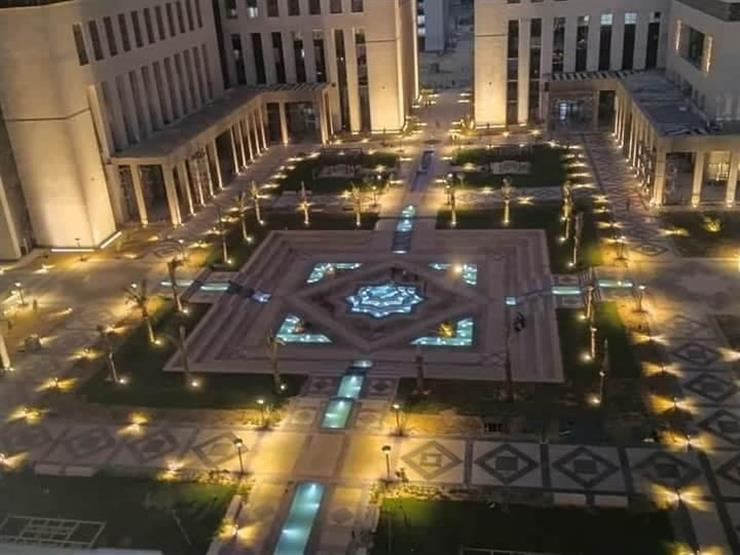
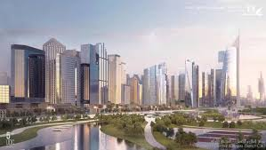
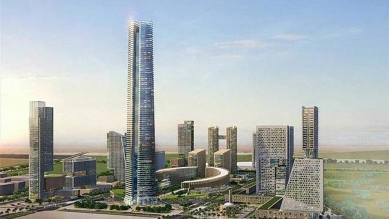
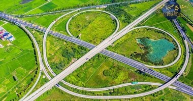
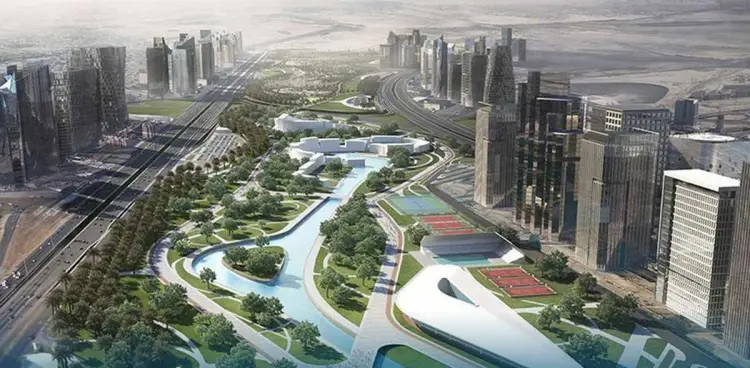
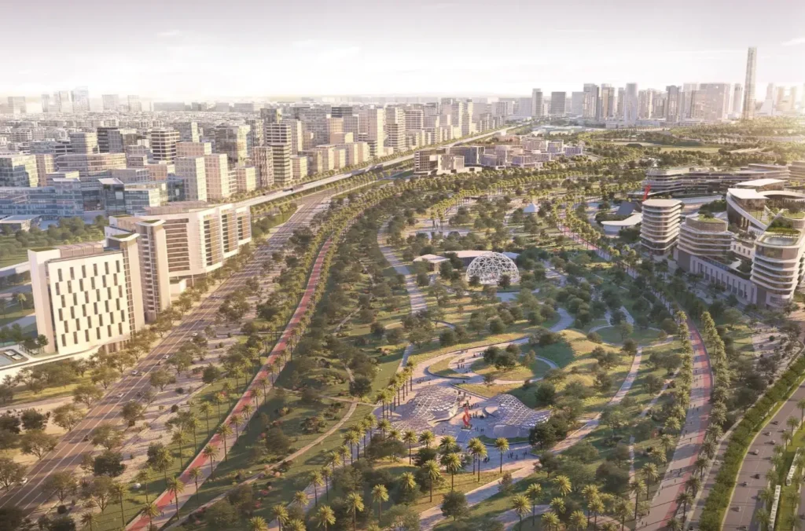

أبرز إنجازات المشروع
الحي الحكومي ونقل الوزارات
تم إنشاء الحي الحكومي ليضم مقر رئاسة مجلس الوزراء، ومباني الوزارات المختلفة، والبرلمان، وهو
مجهز بأحدث التقنيات الرقمية لتحويل الجهاز الإداري إلى حكومة ذكية بلا ورق، مما يرفع كفاءة
العمل الحكومي ويسهل تقديم الخدمات للمواطنين.

مركز مالي وأعمال عالمي
تم إنشاء الحي المالي والتجاري، الذي يضم مقرات البنك المركزي والبورصة المصرية، إلى جانب مجمعات تجارية ضخمة تستهدف جذب الاستثمارات الأجنبية وتعزيز الاقتصاد المصري

أطول برج في أفريقيا – البرج الأيقوني
تم بناء البرج الأيقوني، الذي يعد أطول برج في أفريقيا بارتفاع 400 متر، ليكون مركزًا اقتصاديًا وسياحيًا عالميًا يعكس الطابع العصري للعاصمة الجديدة.

شبكة طرق ومواصلات حديثة
تم تنفيذ شبكة طرق متطورة بطول 650 كم، بالإضافة إلى مشروع القطار الكهربائي السريع والمونوريل، لربط العاصمة بالقاهرة الكبرى والمدن الجديدة، مما يسهل التنقل ويعزز الاستثمارات في المنطقة

حي سكني متكامل ومدينة ذكية
تم تطوير مناطق سكنية بمختلف الفئات، تشمل الإسكان الفاخر والمتوسط والاجتماعي، كما تم إدخال أنظمة ذكية لإدارة المدينة، تشمل كاميرات مراقبة حديثة، وأنظمة إضاءة ذكية، وتقنيات توفير الطاقة.

مشروعات تعليمية وصحية متطورة
تضم العاصمة جامعات دولية مرموقة ومدارس عالمية، إلى جانب مدينة طبية متكاملة مجهزة بأحدث المستشفيات والمراكز الطبية، لضمان تقديم خدمات تعليمية وصحية بمعايير عالمية.
